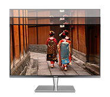
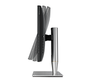
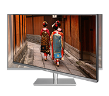

No More Eye Strain
Ultra-low Blue Light Monitor
The TÜV Rheinland-certified ASUS Blue Light Filter protects you from harmful blue light, and you can easily access its four different filter settings via a hotkey. ASUS ProArt™ series monitors have undergone stringent performance tests and has been certified by TÜV Rheinland laboratories, a global provider of technical, safety, and certification services, to emit low blue light levels.
Blue Light Filter Level
Flicker-free Technology
It's time to say goodbye to those tired, strained eyes. ASUS ProArt series monitors feature TÜV Rheinland-certified ASUS Flicker-Free technology to reduce flicker for a comfortable viewing experience. This technology helps minimize instances of eyestrain and other damaging ailments, especially when you spend long, countless hours in front of a display watching favorite videos.
Ergonomic Design
ASUS ProArt Series monitors are ergonomically-designed to give you the best viewing position possible. You can even pivot the screen to portrait mode — handy when it comes to working with websites or long documents.
-

Height adjustment
-

Pivot
-

Tilt
-

Swivel